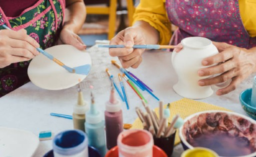
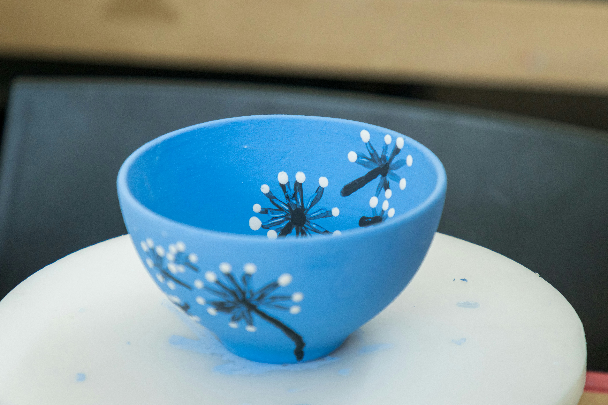

Join our creative community at Pottery Palette! Whether you're here for a fun night out with friends or a family bonding activity, our pottery painting sessions are perfect for all ages and skill levels. Let your imagination run wild as you bring your clay creations to life!

At Pottery Palette, you can choose from a variety of clay objects to personalize, including bowls, mugs, plates, and figurines. Our selection is designed to inspire your creativity, allowing you to paint each piece with your unique style. Once you’ve finished your masterpiece, we’ll carefully dry and package it, ensuring it is sent directly to your address for you to enjoy at home.